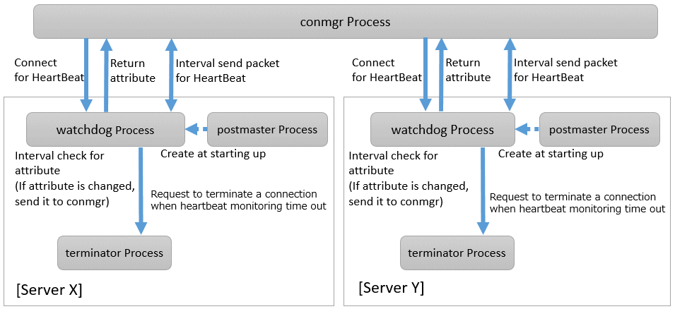

On the client side, the user must start one monitoring process using the cm_ctl command for the set of the instances to be monitored. This process, called the "conmgr process", can only be started by a user who is not an administrator (e.g. superuser(root) on Linux). An instance set is a collection of one or more instances that make up replication. One configuration file (conmgr.conf) for each conmgr process is used to set the information about the set of the instances being monitored and the parameters for monitoring.
On the server side, by installing PostgreSQL's EXTENSION that is called "watchdog", the postmaster will start two processes as background workers at instance startup.
One is the process for sending and receiving packets to and from the conmgr process for heartbeat monitoring. It is called "watchdog process". The other is the process for forcibly terminating SQL connections of the clients for which the watchdog process detects a failure on heartbeat monitorting. It is called "terminator process". SQL connections that do not use Connection Manager is also terminated, because the terminator process terminates them by IP address as key.
Note
System Configuration Notes
For replication, it is recommended that the instance that connects to the upstream instance of replication and the conmgr process that regards the upstream instance as an instance to be monitored for heartbeart (specified in backend_host parameter or backend_hostaddr parameter that is a configuration parameter of conmgr process) be not placed on the same server. This is because if the conmgr process stops normally or abnormally, the terminator process in the upstream instance will also kill the replication connection. The replication connection will reconnect automatically even if it is forcibly disconnected, so replication will continue without any problems. However, this can be a problem when the replication load is high or on systems that are sensitive to replication delays.
Note that the replication connection have different monitoring feature than the Connection Manager, so there is no need to monitor the Connection Manager for heartbeat. Refer to PostgreSQL documentation for details.
The process relationship is as follows:

See
Refer to "cm_ctl" in the Reference for information on cm_ctl command.